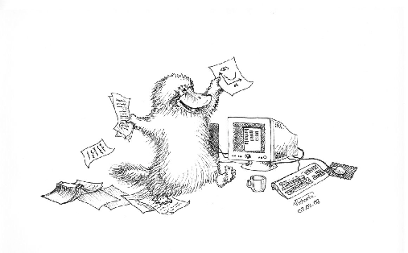

Computational Physics Lectures: Introduction to the course
2017
Overview of first week
- Tuesday (most likely):
- Presentation of the course, aims and content
- Introduction to C++ programming and numerical precision. Exercises for first week.
- Numerical differentiation and loss of numerical precision (chapter 3 lecture notes)
- Computer lab: Thursday (most likely)
- The first two weeks we focus on simple programming tasks, start to look at project 1 and to set up the software Git and a repository at Github as well as Qt Creator as one possible IDE. This week we discuss how to set up Git and obtain a Github account.
Reading suggestions and exercises
- Read sections 2.1-2.5 and 3.1-3.2 of lecture notes:
- Introduction to C++ programming
- Numerical precision and C++ programming (chapter 2 of lecture notes)
- Numerical differentiation and loss of numerical precision (chapter 3 lecture notes)
- Work on warm up exercise to demonstrate several programming elements and/or start looking at project 1
Lectures and ComputerLab
- Lectures: Most likely Tuesdays from 3pm to 5pm (As of now not determined)
- Weekly reading assignments needed to solve projects.
- First hour of each lab session may be used to discuss technicalities, address questions etc linked with projects.
- Detailed lecture notes, exercises, all programs presented, projects etc can be found at the Github address of the course.
- Computerlab: Most likely Thursdays. We have reserved a time slot from 3pm to 7pm.
- Weekly plans and all other information are the github address of the course.
- Four projects, all have to be approved. The first project is pass/not passed only while the last three projects are graded and count 25% each of the final mark. The course ends with a final oral exam where you present a project of your choice. The final oral exam accounts for the remaining 25% of the final grade.
Course Format
- Use version control like Git for repository and all your material.
- C/C++ is the default programming language, but Fortran2008 and Python are also used. All source codes discussed during the lectures can be found at the webpage and github address of the course. We recommend either C/C++, Fortran2008 or Python as languages.
Topics covered in this course
- Numerical precision and intro to C++ programming
- Numerical derivation and integration
- Random numbers and Monte Carlo integration
- Monte Carlo methods in statistical physics
- Quantum Monte Carlo methods
- Linear algebra and eigenvalue problems
- Non-linear equations and roots of polynomials
- Ordinary differential equations
- Partial differential equations (may not be covered)
- Parallelization of codes
- High-performance computing aspects and optimization of codes
Syllabus
Linear algebra and eigenvalue problems, chapters 6 and 7.
- Know Gaussian elimination and LU decomposition
- How to solve linear equations
- How to obtain the inverse and the determinant of a real symmetric matrix
- Cholesky and tridiagonal matrix decomposition
Syllabus
Linear algebra and eigenvalue problems, chapters 6 and 7.
- Householder's tridiagonalization technique and finding eigenvalues based on this
- Jacobi's method for finding eigenvalues
- Singular value decomposition
- Qubic Spline interpolation
Syllabus
Numerical integration, standard methods and Monte Carlo methods (chapters 4 and 11).
- Trapezoidal, rectangle and Simpson's rules
- Gaussian quadrature, emphasis on Legendre polynomials, but you need to know about other polynomials as well.
- Brute force Monte Carlo integration
- Random numbers (simplest algo, ran0) and probability distribution functions, expectation values
- Improved Monte Carlo integration and importance sampling.
Syllabus
Monte Carlo methods in physics (chapters 12, 13, and 14).
- Random walks and Markov chains and relation with diffusion equation
- Metropolis algorithm, detailed balance and ergodicity
- Simple spin systems and phase transitions
- Variational Monte Carlo
- How to construct trial wave functions for quantum systems
Syllabus
Ordinary differential equations (chapters 8 and 9).
- Euler's method and improved Euler's method, truncation errors
- Runge Kutta methods, 2nd and 4th order, truncation errors
- How to implement a second-order differential equation, both linear and non-linear. How to make your equations dimensionless.
- Boundary value problems, shooting and matching method (chap 9).
Syllabus
Partial differential equations, chapter 10.
- Set up diffusion, Poisson and wave equations up to 2 spatial dimensions and time
- Set up the mathematical model and algorithms for these equations, with boundary and initial conditions. Their stability conditions.
- Explicit, implicit and Crank-Nicolson schemes, and how to solve them. Remember that they result in triangular matrices.
- How to compute the Laplacian in Poisson's equation.
- How to solve the wave equation in one and two dimensions.
Overarching aims of this course
- Develop a critical approach to all steps in a project, which methods are most relevant, which natural laws and physical processes are important. Sort out initial conditions and boundary conditions etc.
- This means to teach you structured scientific computing, learn to structure a project.
- A critical understanding of central mathematical algorithms and methods from numerical analysis. In particular their limits and stability criteria.
- Always try to find good checks of your codes (like solutions on closed form)
- To enable you to develop a critical view on the mathematical model and the physics.
Additional learning outcomes
- has a thorough understanding of how computing is used to solve scientific problems
- knows some central algorithms used in science
- has knowledge of high-performance computing elements: memory usage, vectorization and parallel algorithms
- understands approximation errors and what can go wrong with algorithms
- has experience with programming in a compiled language (Fortran, C, C++)
- has experience with debugging software
- has experience with test frameworks and procedures
- can critically evaluate results and errors
- understands how to increase the efficiency of numerical algorithms and pertinent software
- understands tools to make science reproducible and has a sound ethical approach to scientific problems
- Is able to write a scientific report with software like Latex
Computing knowledge
Our ideal about knowledge on computational science
Hopefully this is not what you will feel towards the end of the semester!

And, there is nothing like a code which gives correct results!!

- J. J. Barton and L. R. Nackman,*Scientific and Engineering C++*, Addison Wesley, 3rd edition 2000.
- B. Stoustrup, The C++ programming language, Pearson, 1997.
- An excellent text is Discovering Modern C++
- D. Yang, C++ and Object-oriented Numeric Computing for Scientists and Engineers, Springer 2000.
- And the C++ resource network provides great help.
- The Fortran tutorial is also very useful.
- And for Python programmers, see the textbook by Hans Petter Langtangen
Extremely useful tools, strongly recommended
and discussed at the lab sessions.
- Git and a repository at Github, this week and next weeks.
- ipython notebook
- Qt Creator as one possible IDE for editing and mastering computational projects (for C++ codes, see webpage of course), discussed during the whole semester. You can however use other IDEs as well such as VisualC++.
- Armadillo as a useful numerical library for C++, highly recommended, discussed in connection with LinAlgebra lectures
- Unit tests, discussed throughout the whole semester
- Piazza for discussions and teaching material